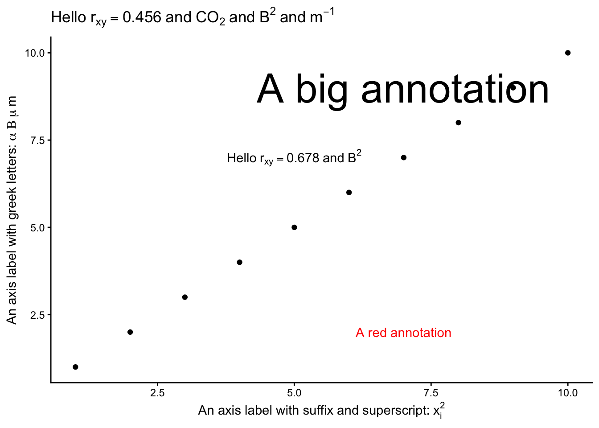

Examples of all of these are shown in the labels, title and annotations included in the plot below:
df <-tibble(x=1:10,y=1:10)cor <-0.456df |>ggplot(aes(x=x,y=y)) +geom_point() +labs( x =bquote("An axis label with suffix and superscript:"~ x[i]^2), y =bquote("An axis label with greek letters:"~ alpha ~ Beta ~ mu ~ m),title =bquote("Hello"~ r[xy] == .(cor) ~"and"~ CO[2] ~"and"~ B^2~"and"~ m^{-1})) +annotate(geom="text", x =5, y =7, label =deparse(bquote("Hello"~ r[xy] ==0.678~"and"~ B^2)), parse =TRUE) +annotate(geom="text", x =7, y =9, label =bquote("A big annotation"), size =12) +annotate(geom="text", x =7, y =2, label =bquote("A red annotation"), colour ="red") +theme_classic()

4.2 ?plotmath
plotmath expressions can be used for mathematical annotation in text within plots in R when writing titles, subtitles, axis labels, legends and annotations. It works in both base R graphics and ggplot2.
In the console pane, type ?plotmath in the console pane to see the full list of options.
Some key rules are:
subscripts: O[2] gives O2
superscripts: m^2 gives m2, m^{-1} gives m-1
Lower case Greek: alpha, beta etc gives \(\alpha, \beta\) etc, so mu
Upper case Greek: Delta, Gamma etc gives \(\Delta, \Gamma\) etc